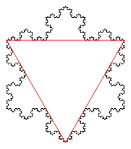

Using recursion we can make beautiful things! In this exercise you will learn to make the Koch snowflake (below).
The entire snowflake consists of three copies of a fractal, arranged in a triangular shape:

Unlike the tree and the earlier triangle fractals, this one does not return to the same place after each recursive call. For example, the base case has the sprite start on the left and go to the right (below).

At higher levels. the algorithm repeats the next lower level four times in the pattern shown below. Look at the images below to see how the previous level is repeated in each higher level.


Something that may be hard to tell visually is that each recursive call makes a picture one third the size of the caller's picture. (This makes the entire fractal the same distance from left to right in every level.)
size in each recursive call have to be one third of the caller's size? There are four copies; why not one fourth size? Why exactly one third?